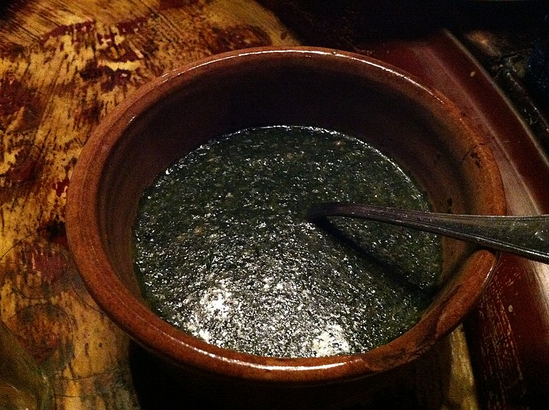

Macarona béchamel

Ingredients
- 2 frozen packages (or 800 grams) of diced Molokhia (about 240 calories total) Note: Molokhia also comes as whole leaves (even if frozen). You do not want this unless you are making a different kind of preparation such as a Lebanese or Vietnamese version.
- 6-8 crushed garlic cloves (about 18 – 24 calories)
- 4 cups of chicken broth / chicken flavored vegetable broth / equivalent chicken bullion cubes (about 20 cal.) Note: You can also use beef broth, but only if the beef broth is light and freshly made. I wouldn’t recommend canned beef broth.
- 1 tablespoon of vegetable oil (120 calories)
- 1/2 teaspoon of salt and then add to taste (if you use bullion cubes, they may already be salty enough)
- A pinch of fresh ground black pepper.
- Optional, but recommended: White rice and/or toasted pita bread (about 150 cal. per 1/4 cup of rice or 160 cal. per half a large pita)
Steps
- Bring 4 cups of broth to a boil.
- Open up your packages of Molokhia leaves as soon as your broth is about to boil. Do not thaw the leaves ahead of time. That “X” shape isn’t anything special. It’s just how my mother used to open the package quickly with a knife and it’s fun, so I do it too.
- Carefully drop each package of frozen molokhia into the boiling broth.
- Bring the broth back up to a mild boil and then just let it simmer. You do not want to boil this soup very hard. A low simmer is perfect.
- Stir the molokhia every once in a while to really get the molokhia melted (only about 15-20 minutes).
- Bring the broth back up to a mild boil and then just let it simmer. You do not want to boil this soup very hard. A low simmer is perfect.
- Stir the molokhia every once in a while to really get the molokhia melted (only about 15-20 minutes).
- After a few minutes take out the bread when it has a nice golden brown color to it. Watch it closely because it can go from perfect to flat out burned in seconds. Carefully remove the bread from the racks and let them cool. If you’re not careful, the bread can shatter in your oven and that’s just a huge pain.
- Once the bread has cooled, crumble each large piece into small bite-sized pieces.
- As soon as the molokhia is all melted, let the pot simmer (not boil) for about 5 minutes and then turn off the heat.
- In a small saute pan, heat up a tablespoon of vegetable or olive oil on medium heat.
- Add in 6 crushed cloves of garlic (8 if you really like it garlicky) and saute while stirring frequently until golden brown. Be careful not to burn the garlic! At this point add in the pinch of crushed black pepper to the garlic and saute together.
- Once the garlic is ready, bring the pan over the pot with the Molokhia in it and then ladle some of the Molokhia over the garlic. If you get a satisfying sizzle noise then you’re doing it right.
- Repeat this step so that all of the garlic in the pan is now in the pot. I’m not sure why this is done except that this is how it is done at my house. It’s an easy way to get the garlic out of the pan and mix the soup at the same time.
- That’s it. Molokhia is ready to be served on its own, or over some rice and/or some toasted pita bread. Add salt to taste.